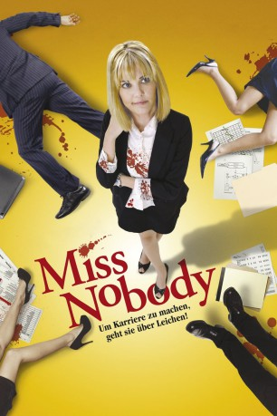
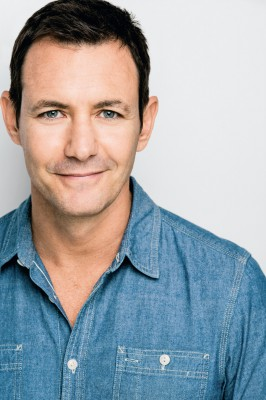

#10537 Bloody Secretary
Alternativ: Miss Nobody (Englischer Titel)
 
 IMDB-Wertung: 5.5 / 10
IMDB-Wertung: 5.5 / 10  Metascore: 0
Metascore: 0 
Sarah Jane McKinney arbeitet als Sekretärin für eine pharmazeutische Firma. Doch sie will im Leben weit mehr erreichen beruflich und privat. Sarah wartet auf ihren Mr. Richtig, aber da der auf sich warten lässt, bewirbt sie sich auf einen Manager-Posten, für den sie ihren Lebenslauf etwas auffrisieren muss. Erst denkt sie, sie würde den Job bekommen, doch wie sich herausstellt, ist sie nur wieder eine Sekretärin, diesmal aber für einen jungen, aufstrebenden Manager, der vielleicht Mr. Richtig sein könnte. Doch versehentlich tötet Sarah den Mann und erkennt, dass das Dahinscheiden von Vorgesetzten für die Karriere wirklich förderlich ist. Dumm nur, dass nun just ihr Mr. Richtig auftaucht in Form eines Detektives von der Mordkommission!
Jahr: 2010
Dauer: 91 Minuten
FSK: 12
Land: USA Studio: Inception Media GroupTonspuren: DTS-HD - ,
Untertitel:
Auflösung: 1080p (1920x1080) Größe: 14028 MB
Genre: Komödie, Krimi
Regisseur: Abram Cox
Drehbuch: Doug Steinberg
Soundtrack: John Dickson
Darsteller:
 Leslie Bibb als Sarah Jane McKinney
Leslie Bibb als Sarah Jane McKinney Adam Goldberg als Det. Sgt. Bill Malloy
Adam Goldberg als Det. Sgt. Bill Malloy Kathy Baker als Claire McKinney
Kathy Baker als Claire McKinney Missi Pyle als Charmaine
Missi Pyle als Charmaine Brandon Routh als Milo Beeber
Brandon Routh als Milo Beeber- David Anthony Higgins als Morty Wickham
 Geoffrey Lewis als Mr. Ketchum
Geoffrey Lewis als Mr. Ketchum Vivica A. Fox als Nan Wilder
Vivica A. Fox als Nan Wilder Patrick Fischler als Pierre JeJeune
Patrick Fischler als Pierre JeJeune- Paula Marshall als Cynthia Bardo
 Sam McMurray als Hale Everwright
Sam McMurray als Hale Everwright Eddie Jemison als Joshua Nether
Eddie Jemison als Joshua Nether- Jeanette Branch als Vivica Fox
 Barry Bostwick als Father Grisham
Barry Bostwick als Father Grisham Richard Riehle als Leonard Ormsby
Richard Riehle als Leonard Ormsby Salvator Xuereb als Johnny Abatemarco
Salvator Xuereb als Johnny Abatemarco- Christopher Carley als Frankie Sheftell
- Mia Pollini als Young Sarah Jane
 Charles Carroll als Mr. Tippet
Charles Carroll als Mr. Tippet- Jazzmun als Snooks
- Mark Irvingsen als Earl ('Daddy') McKinney
- Sean Keller als George the bum
- Mervyn Cole als Tub Dude
 David Kallaway als Travel Agent
David Kallaway als Travel Agent- Andrew Feld als Bobby Big Pecs
- David Monahan als 1st Man
- Gabriel Miller als Benjamin
- Brandon McKinnie als Bully #1
- Sarah Agor als Catholic School Girl
-  Larry Sullivan als 2nd Man
- Frederick Martin Smith als Detective
 Keir O'Donnell als L.J. Feffer
Keir O'Donnell als L.J. Feffer- Hal B. Klein als Reporter #1
- Amie Barsky als Reporter #2
- Shishir Kurup als Doctor Patuk
 Bruce Holman als Detective (uncredited)
Bruce Holman als Detective (uncredited)- Guy Perry als Motel Tranny (uncredited)
 Greg Brown als Pagent Director
Greg Brown als Pagent Director- Maya Harvey als Pageant Girl
- Maura Murphy als JeJeune's Secretary
- Brook Durham als Handsome Man (uncredited)
Datei: X:\NEU\Bloody Secretary (2010, FSK12, 1920x1080).mkv seit 18.01.2019
 Es gibt insgesamt 187 Filme in der Gruppe 'NEU'
Es gibt insgesamt 187 Filme in der Gruppe 'NEU'